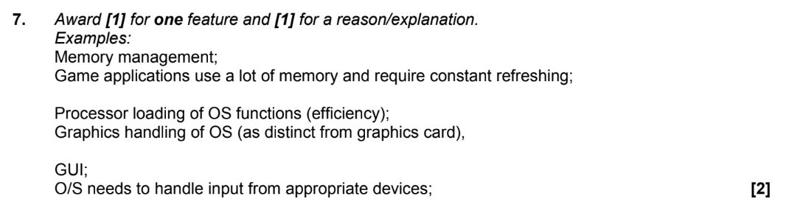

Operating System
2.1.6 Describe the main functions of an operating system
Software
- System Software
- Run a computer's hardware and application programs
- Includes operating system, anti-virus software
- Application Software
- Perform a group of coordinated functions, tasks for the benefit of the users
- Do useful work, such as creating graphics
Operating Systems
- Operating Systems
- Provides an interface for system interaction
- Manages computer resources
- Support computer's basic functions, such as scheduling tasks
- Allow user to run other application softwares
- Devices that contain Operating System
- Desktop
- Laptop
- Smartphone
- What does Operating System do?
- User Interface
- Resource Management
- Security
- Examples of Operating System
- Microsoft Windows
- Apple OS X
- Chrome OS
- Andriod
- IOS
- Windows XP
Past Paper Question
- My answer
- Memory management in operating system is responsible for managing the primary memory of a computer
- It determines the allocation of memory among the computing processes
- Memory management is important in order to avoid overwriting
- Markscheme
Another Past Paper Question
- My answer
- Graphic User Interface
- Graphic User Interface manages input from devices
- Markscheme
